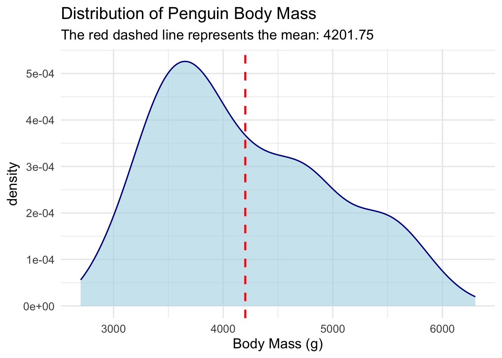
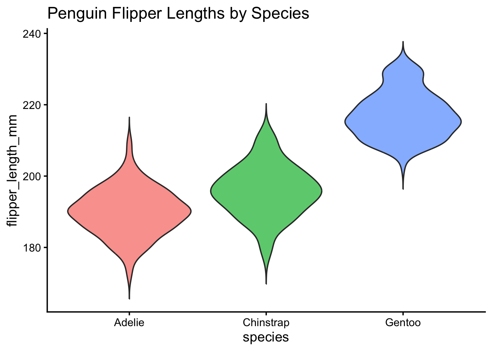

Building Your First R Package: Day 2
In the second session of our 3-day workshop, we will level up our package by including custom datasets, writing multi-layer plotting functions, and leveraging AI for code generation.
R packages
data
advanced ggplot2
CRAN
AI
0.1 Introduction: Leveling Up Your Package
Welcome to Day 2! In our first session, we learned that copying and pasting the same code across projects is a recipe for headaches. We solved this by wrapping our favorite ggplot2 and gt code into reusable functions using the usethis package and the “curly-curly” ({ }) operator.
Today, we are going to make our vizwizard package even more useful for your daily work. We will cover:
- Package Data: How to properly store data inside your package so it travels with your functions.
- Multi-Layer Plots: Writing slightly more advanced, multi-layered publication figures.
- Documentation: Best practices for documenting your datasets so future-you knows what they are.
- Package Checking: Running the ultimate “spellcheck” on your package (with special notes for Mac vs. Windows!).
- AI Assistance: A brief guide on using AI tools to assist in your R package development.
Let’s start by loading our essential tools.
library(devtools)Loading required package: usethislibrary(usethis)
library(tidyverse)── Attaching core tidyverse packages ──────────────────────── tidyverse 2.0.0 ──
✔ dplyr 1.2.0 ✔ readr 2.2.0
✔ forcats 1.0.1 ✔ stringr 1.6.0
✔ ggplot2 4.0.2 ✔ tibble 3.3.1
✔ lubridate 1.9.5 ✔ tidyr 1.3.2
✔ purrr 1.2.1 ── Conflicts ────────────────────────────────────────── tidyverse_conflicts() ──
✖ dplyr::filter() masks stats::filter()
✖ dplyr::lag() masks stats::lag()
ℹ Use the conflicted package (<http://conflicted.r-lib.org/>) to force all conflicts to become errorslibrary(palmerpenguins)
Attaching package: 'palmerpenguins'
The following objects are masked from 'package:datasets':
penguins, penguins_raw
Warning
Mac vs. Windows: The “Under the Hood” Tools Before we go further, package development requires your computer to have certain tools installed to build code. If you haven’t already:
Windows Users: You must download and install Rtools from the CRAN website. Rtools is a set of programs that allow Windows to build R packages.
Mac Users: You need the Xcode Command Line Tools. You can install this by opening your Mac’s Terminal app and typing xcode-select --install and hitting Enter.
1 Including Data in Your Package
1.1 The Problem: Where does the data go?
When you write a normal R script, you usually load data from your computer.
Windows users might use a path like read_csv("C:/Users/Name/Documents/my_data.csv").
Mac users might use a path like read_csv("~/Documents/my_data.csv").
If you share your package with a colleague on a different operating system, those hard-coded paths will instantly break!
1.2 The Solution: R packages have a special built-in way to store data so that it is always available whenever you type library(vizwizard), regardless of whether the user is on a Mac or a PC.
2 Tutorial: Step-by-Step Package Data
Let’s say your lab has a standardized “Demographics Table” that you always use as a reference, and you want it baked right into your package.
2.1 Step 1: Set up the raw data folder
Run this command in your console:
usethis::use_data_raw(name = "lab_demographics")What this does: It creates a new folder called data-raw/ and opens a script inside it. This script is basically your “scratchpad.” It’s where you put the code that reads your messy CSVs and cleans them up.
2.2 Step 2: Write your cleaning code and save the data
Inside that new data-raw/lab_demographics.R script, you might write something like this:
# 1. Pretend we are loading and cleaning a dataset here
# (For this example, we will just create a small dataframe from scratch)
lab_demographics <- data.frame(
group = c("Control", "Treatment A", "Treatment B"),
target_n = c(100, 50, 50),
active = c(TRUE, TRUE, FALSE)
)# 2. THE MAGIC STEP: Save it to the package!
usethis::use_data(lab_demographics, overwrite = TRUE)What this does: use_data() takes your cleaned dataframe and secretly compresses it into a special .rda (R Data) file inside a hidden data/ folder.
Now, if you install your package and restart R, you can just type lab_demographics into the console and the data will appear, as if by magic!
Practice: Exporting your own simple dataset
Your Turn: Create a very simple dataset called my_favorite_colors that contains a dataframe of two columns: color_name and hex_code. Save it to your package using usethis::use_data().
Need a hint?
You don’t need to read a CSV for this! Just usedata.frame() or tibble() to type out two or three colors manually, assign it to the variable my_favorite_colors, and pass that variable to use_data().
Click for the solution
# Create the dataset directly in your workspace
my_favorite_colors <- data.frame(
color_name = c("Navy", "Forest Green", "Crimson"),
hex_code = c("#000080", "#228B22", "#DC143C")
)# Save it so it lives inside your package forever!
usethis::use_data(my_favorite_colors, overwrite = TRUE)3 Multi-Layer Plotting Functions
3.1 Tutorial: Density Plots with Means
On Day 1, we learned that when we pass unquoted column names (like body_mass_g) into our custom functions, we have to wrap them in “curly-curly” braces ({{ }}).
Let’s use that rule to build a function that adds multiple layers to a plot. We are going to make a pub_density() function. It will:
Draw a density plot (a smoothed-out histogram).
Automatically calculate the overall average (mean) of the data.
Draw a dashed vertical line right at that average.
#' Create a Publication-Ready Density Plot with a Mean Line
#'
#' @param data A dataframe
#' @param numeric_var The numeric variable to plot (unquoted)
#' @return A ggplot object
#' @export
pub_density <- function(data, numeric_var) {
# Step 1: Calculate the mean of the variable the user provides
# We use drop_na() so the mean calculation doesn't fail if there are blanks!
mean_val <- data %>%
drop_na({{ numeric_var }}) %>%
summarize(avg = mean({{ numeric_var }})) %>%
pull(avg) # 'pull' extracts just the number out of the dataframe
# Step 2: Build the plot
ggplot(data, aes(x = {{ numeric_var }})) +
# Layer 1: The density curve
geom_density(fill = "lightblue", alpha = 0.6, color = "darkblue") +
# Layer 2: The vertical line for the mean
geom_vline(xintercept = mean_val, color = "red", linetype = "dashed", size = 1) +
# Layer 3: Clean up the theme
theme_minimal(base_size = 14) +
labs(subtitle = paste("The red dashed line represents the mean:", round(mean_val, 2)))
}
# Test it out on the penguins dataset!
pub_density(penguins, body_mass_g) +
labs(title = "Distribution of Penguin Body Mass", x = "Body Mass (g)")Warning: Using `size` aesthetic for lines was deprecated in ggplot2 3.4.0.
ℹ Please use `linewidth` instead.Warning: Removed 2 rows containing non-finite outside the scale range
(`stat_density()`).
Practice: The Simple Violin Plot
Your Turn: Write a function called pub_violin. It should take a dataframe, a categorical x_var, and a numeric y_var. It should output a geom_violin() plot. Make sure the violins are filled with a color based on the x_var.
Need a hint?
Start your function exactly like we did on Day 1. Remember to put {{ x_var }} and {{ y_var }} inside the aes() function. To get the colors right, you also need to add fill = {{ x_var }} insideaes().
Click for the solution
#' Create a Simple Violin Plot
#'
#' @param data A dataframe
#' @param x_var A categorical variable for the x-axis (unquoted)
#' @param y_var A numeric variable for the y-axis (unquoted)
#' @return A ggplot object
#' @export
pub_violin <- function(data, x_var, y_var) {
ggplot(data, aes(x = {{ x_var }}, y = {{ y_var }}, fill = {{ x_var }})) +
# Trim = FALSE makes the violin tails look a bit more natural
geom_violin(trim = FALSE, alpha = 0.7) +
theme_classic(base_size = 14) +
theme(
legend.position = "none" # Hide the legend since the x-axis already tells us the groups!
)
}
# Test it out!
pub_violin(penguins, species, flipper_length_mm) +
labs(title = "Penguin Flipper Lengths by Species")Warning: Removed 2 rows containing non-finite outside the scale range
(`stat_ydensity()`).
4 Documenting Datasets
We know that running devtools::document() turns our #’ comments into help files for our functions.
Tip
Shortcut Alert! Instead of typing devtools::document() into the console every time, use your keyboard:
Mac Users: Press Cmd + Shift + D
Windows Users: Press Ctrl + Shift + D
But how do you document a dataset?
Datasets don’t have code underneath them to attach comments to. Instead, we create a script just for documentation.
5 Tutorial: Documenting lab_demographics
Create a standard R script and save it as R/data.R. Inside, write out the roxygen2 comments, and then just put the name of the dataset in quotes at the very bottom.
# Inside R/data.R
#' Laboratory Demographics Reference
#'
#' A small dataset containing the target enrollment numbers for our
#' three main study groups.
#'
#' @format A data frame with 3 rows and 3 columns:
#' \describe{
#' \item{group}{The name of the study group}
#' \item{target_n}{The number of participants we want to enroll}
#' \item{active}{TRUE if the group is currently enrolling, FALSE otherwise}
#' }
"lab_demographics"[1] "lab_demographics"Now, when you document your package, you can type ?lab_demographics in your console, and a beautiful help page will pop up explaining exactly what every column means!
6 The Ultimate Package Spellcheck
Whether you want to share your package with the world on CRAN (The Comprehensive R Archive Network), put it on GitHub, or just keep it for yourself, you want to make sure your package isn’t fundamentally broken.
R has a built-in “inspector” that checks your package for missing commas, undocumented arguments, and messy code.
Run this in your console:
devtools::check()
# Keyboard Shortcut:
# Mac: Cmd + Shift + E
# Windows: Ctrl + Shift + EWhen you run this, your console will output a lot of text. It is building your package from scratch and testing it. Note: If this step fails immediately with an error about missing compilers, refer back to the warning at the top of this page about Rtools (Windows) and Xcode (Mac).
At the very end, it will give you a score:
Errors: Your package is broken and will not install. You must fix these.
Warnings: Your package works, but you did something risky (like forgetting to add ggplot2 to your DESCRIPTION file dependencies).
Notes: Minor formatting suggestions.
Goal: Try to get 0 Errors, 0 Warnings, and 0 Notes!
7 AI-Assisted Coding for Casual Coders
Writing out documentation and boilerplate code can feel tedious. Generative AI (like Gemini, ChatGPT, or Claude) is a fantastic tool for casual coders to speed up this process, if you know how to talk to it.
7.1 Tips for getting good R Package code from AI:
Be specific about the Tidyverse: R has changed a lot in 10 years. If you ask an AI for a plot, it might give you ancient Base R code.
7.1.1 Good Prompt: “Write an R function using ggplot2 and dplyr…”
Tell it you are making a package: AI needs context.
7.1.2 Good Prompt: “I am writing an R package. Generate the roxygen2 documentation header for this function…”
Remind it about Tidy Evaluation: AIs often forget the {{ }} syntax. Remind them!
7.1.3 Good Prompt: “Write a function that takes a dataframe and an unquoted column name. You MUST use the curly-curly {{ }} operator for the column name.”
8 Practice: Prompt Engineering
Imagine you have a messy script that creates a scatterplot, and you want AI to turn it into a neat package function for you. Which of these prompts will give you a better result?
Prompt A: “Make a scatterplot function for my data.”
Prompt B: “I am building an R package. Please write a function using ggplot2 that takes a dataframe, an unquoted x variable, and an unquoted y variable to make a scatterplot. Use the {{ }} operator for the variables, and include a roxygen2 header with @param and @export tags.”
Click for the answer
Prompt B is significantly better! Prompt A will likely give you a function that works in a standard script but fails completely when put inside a package because it will lack the correct parameter definitions, {{ }} formatting, and @export documentation.You’ve made it through Day 2! By now, you know how to bundle custom datasets into your package, write multi-layered plotting wrappers, and use tools like devtools::check() and AI to make your life easier.